Chapter 7 GeoJSON
Last updated: 2021-08-24 14:54:58
7.1 Introduction
In this chapter, we are going to learn about GeoJSON—a plain text format for vector layers. On the one hand, GeoJSON is a special case of JSON, which makes it fully compatible and easy to process with web technologies such as JavaScript. On the other hand, it is a fully-featured vector layer format, capable of representing complex vector layers and their non-spatial attributes. GeoJSON is, therefore, widely-used in web mapping and deserves its own chapter.
We are going to start with the definition of GeoJSON (Section 7.2) and an overview of its syntax and usage for representing various types of geometries (Sections 7.3–7.4). Then, we will discuss ways in which GeoJSON can be loaded and displayed on a Leaflet map (Sections 7.5–7.8).
7.2 What is GeoJSON?
GeoJSON is an plain-text format designed for representing vector geometries, with or without non-spatial attributes, based on the JavaScript Object Notation, JSON (Section 3.11.1). We briefly introduced the GeoJSON format in Section 3.11.2. This chapter is devoted to more in-depth treatment of the format and its use in web maps.
GeoJSON has become a very popular data format in many GIS technologies and services related to web mapping. It is actually the standard format for passing spatial vector layer data between the client and the server in web applications. As mentioned in Section 3.11.2, the main reason for its popularity is the fact that GeoJSON is a special case of JSON, which means that it can be easily parsed and processed with JavaScript. As a result, GeoJSON is the best (sometimes even the only) supported format by JavaScript web-mapping libraries and platforms, including those we learn about in this book: Leaflet (Chapters 6–8), CARTO (Chapters 9–11), and Turf.js (Chapter 12).
Other advantages of GeoJSON are that it is simple and human-readable, being a plain-text format. A disadvantage of GeoJSON is that its file size can get relatively large compared to other spatial vector layer formats, such as the Shapefile or GeoPackage formats. However, there are ways to reduce GeoJSON file size by simplifying its geometry and removing unnecessary attributes (Section 7.4.2).
In this chapter, we learn about how the GeoJSON format is structured (Section 7.3), how we can to create GeoJSON instances and edit them (Section 7.4), and how we can add GeoJSON layers on a Leaflet map (Sections 7.5–7.8). Keep in mind that, for simplicity, we will use the term GeoJSON interchangeably referring to both the original GeoJSON string, as well as the parsed object derived from that string in a JavaScript environment. Mapping library documentation often also uses the term GeoJSON for both cases. However, strictly speaking, the term GeoJSON refers just to text string instances, not to the derived JavaScript objects (see Section 3.11).
7.3 GeoJSON structure
7.3.1 Overview
In this section, we go over the structure of different types of GeoJSON strings you may encounter when working with this format. If you are new to JSON and GeoJSON, it may seem difficult to grasp the exact syntax of the GeoJSON format right from the start. Don’t worry—we will come back to more examples later on in this chapter, as well as in the subsequent chapters. Moreover, rest assured one is almost never required to type GeoJSON strings by hand. Instead, web-map developers generally use pre-existing GeoJSON, exported from layers in other formats using GIS software, or coming from external web resources and databases. As we will see in the Section 7.4, you can create and edit GeoJSON even without GIS software, using web interfaces such as the one called geojson.io. Nevertheless, it is important to be familiar with the general structure of GeoJSON to recognize what type of layer you have at hand, and how to extract meaningful information from it.
GeoJSON is a format for representing Simple Feature geometries, possibly along with their non-spatial attributes. The Simple Features standard defines 20+ types of geometry types, and the Well-Known Text (WKT) format for representing them66. GeoJSON supports just the seven most commonly used Simple Feature geometry types (Figure 7.1). Having non-spatial attributes is not required for valid GeoJSON, so the seven geometries alone are encountered when representing geometric shapes only, with no attributes. In case non-spatial attributes are present, their combination with a geometry forms a "Feature". Finally, a collection of more than one feature forms a "FeatureCollection". The "FeatureCollection" GeoJSON type most closely corresponds to the meaning of a “layer,” which you may be familiar with from GIS software (e.g., a Shapefile). The hierarchy of GeoJSON types thus includes nine types, which can be grouped into three “levels” of complexity:
- Geometry—One of seven Simple Feature geometry types, such as
"MultiPolygon"(Table 7.1, Figure 7.1) "Feature"—A feature, i.e., a geometry along with its non-spatial attributes"FeatureCollection"—A collection of features
The seven geometry types that GeoJSON supports are listed in Table 7.1.
| Type | Description |
|---|---|
"Point" |
A single point |
"LineString" |
Sequence of connected points forming a line |
"Polygon" |
Sequence of connected points “closed” to form a polygon, possibly having one or more holes |
"MultiPoint" |
Set of points |
"MultiLineString" |
Set of lines |
"MultiPolygon" |
Set of polygons |
"GeometryCollection" |
Set of geometries of any type except for "GeometryCollection" |
A "Feature" in GeoJSON contains a geometry object and additional non-spatial properties, also known as attributes. Finally, a "FeatureCollection" represents a collection of features. The following Sections 7.3.2–7.3.4 demonstrate the formatting of GeoJSON strings from the nine above-mentioned GeoJSON types:
7.3.2 Geometries
7.3.2.1 General structure
A GeoJSON string for representing either of the first six geometry types, i.e., all types except for "GeometryCollection", is composed of two properties67:
"type"—The geometry type (a string, such as"Point")"coordinates"—The coordinates (an array, such as[30, 10])
For example, the following GeoJSON string is an example of a "Point" geometry:
{
"type": "Point",
"coordinates": [30, 10]
}The "type" property can take one of the seven strings: "Point", "LineString", "Polygon", "MultiPoint", "MultiLineString", "MultiPolygon" or "GeometryCollection" (Table 7.1). The "coordinates" property is specified with an array. The basic unit of the coordinate array is the point coordinate. According to the GeoJSON specification, point coordinates should refer to two-dimensional68 locations in geographical units of longitude and latitude (ESPG:4326), i.e., [lon, lat]69. The basic point coordinate can be used on its own (for "Point", as shown in the above GeoJSON example), or as a component in higher hierarchical level arrays for the other geometry types (see below).
Now that we covered the things that are common to the seven GeoJSON geometry types, we focus on the specifics of each. Overall, the seven geometry types can be conceptually divided into three groups, based on their complexity:
"Point","LineString","Polygon"—Single-part geometries, where the geometry consists of one shape of one type (Section 7.3.2.2)"MultiPoint","MultiLineString","MultiPolygon"—Multi-part geometries, where the geometry consists of one or more shapes of one type (Section 7.3.2.3)"GeometryCollection"—Geometry collections, where the geometry can consist of one or more shapes of any type (Section 7.3.2.4)
FIGURE 7.1: Seven Simple Feature geometry types supported by the GeoJSON format
7.3.2.2 Single-part geometries
For single-part geometry types, coordinates are specified as follows:
"Point"coordinates are specified with a single point coordinate (e.g.,[30, 10])."LineString"coordinates are specified with an array of point coordinates (e.g.,[[30, 10], [10, 30], [40, 40]])."Polygon"coordinates are specified with an array of arrays of point coordinates, where each array of point coordinates specifies the exterior border ring (first array), or polygon holes (all other arrays, if any). Also, the last coordinate in each set is equal to the first one, to form a closed ring (e.g.,[[[30, 10], [40, 40], [20, 40], [10, 20], [30, 10]]]).
Note how there is an increasing number of hierarchical levels in the coordinates array for these three geometry types:
- A
"Point"has one level[...]. - A
"LineString"has two levels[[...]]. - A
"Polygon"has three levels[[[...]]].
Table 7.2 shows several examples of single-part geometry types, including two varieties of "Polygon" geometries: with holes and without holes.
| Type | Examples | |
|---|---|---|
Point
|
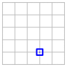 | |
LineString
|
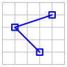 | |
Polygon
|
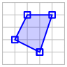 | |
| 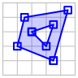 | ||
7.3.2.3 Multi-part geometries
Multi-part geometry types are similar to their single-part counterparts. The only difference is that one more hierarchical level is added into the coordinates array, for specifying multiple shapes. Therefore:
- A
"MultiPoint"has two levels[[...]]. - A
"MultiLineString"has three levels[[[...]]]. - A
"MultiPolygon"has four levels[[[[...]]]].
For example, a "MultiLineString" consists of an array of arrays of arrays, or an array of "LineString" coordinates, for defining several line parts, as in [[[10, 10], [20, 20], [10, 40]], [[40, 40], [30, 30], [40, 20], [30, 10]]]. Table 7.3 gives examples of multi-part geometry types.
| Type | Examples | |
|---|---|---|
MultiPoint
|
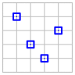 | |
MultiLineString
|
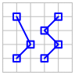 | |
MultiPolygon
|
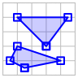 | |
| 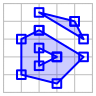 | ||
7.3.2.4 Geometry collections
A geometry collection is a set of several geometries, where each geometry is one of the previously listed six types, i.e., any geometry type excluding "GeometryCollection". For example, a "GeometryCollection" consisting of two geometries, a "Point" and a "MultiLineString", can be defined as follows:
{
"type": "GeometryCollection",
"geometries": [
{
"type": "Point",
"coordinates": [...]
},
{
"type": "MultiLineString",
"coordinates": [...]
}
]
}where [...] are the coordinate arrays for each geometry. Table 7.4 shows an example of a geometry collection GeoJSON string.
| Type | Examples | |
|---|---|---|
GeometryCollection
|
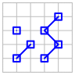 | |
It is harder to deal with geometry collections when applying spatial operations, because not every spatial operator (Section 9.6.4) has the same meaning (if any) for all geometry types. For example, calculating line length is meaningful for a "MultiLineString" geometry, but not for a "Point" geometry. For this reason, geometry collections are rarely encountered in practice, and we will not use them in this book.
7.3.3 Features
A "Feature" is formed when a geometry is combined with non-spatial attributes, to form a single object. The non-spatial attributes are encompassed in a property named "properties", containing one or more name-value pairs—one for each attribute. For example, the following "Feature" represents a geometry with two attributes, named "fill" and "area":
{
"type": "Feature",
"geometry": {...},
"properties": {
"fill": "red",
"area": 3272386
}
}where {...} represents a geometry object, i.e., one of the seven geometry types shown above. Table 7.5 shows an example of a GeoJSON feature.
| Type | Examples | |
|---|---|---|
Feature
|
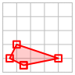 | |
7.3.4 Feature collections
A "FeatureCollection" is, like the name suggests, a collection of "Feature" objects. The separate features are contained in an array, comprising the "features" property. For example, a "FeatureCollection" composed of four features can be specified as follows:
{
"type": "FeatureCollection",
"features": [
{...},
{...},
{...},
{...}
]
}where each {...} represents a "Feature". Table 7.6 shows an example of a GeoJSON feature collection.
| Type | Examples | |
|---|---|---|
FeatureCollection
|
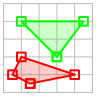 |
|
If you are coming from GIS background, the "FeatureCollection" GeoJSON type will seem the most natural one. For example, in the terminology of the Shapefile—the most commonly used format for vector layers in GIS software—a "FeatureCollection" is analogous to a layer with more than one feature and one or more attributes—which is by far the most commonly encountered case. A "Feature" is analogous to a layer containing a single feature, which is rarely encountered. Bare GeoJSON geometries, such as "Point" or "MultiPolygon", have no analogs in the Shapefile format.
One more thing that may seem surprising for GIS software users is that a "FeatureCollection" does not have to be composed of features with the same type of geometry. For instance, in the above schematic GeoJSON "FeatureCollection", the first two {...} features may have "Point" geometry while the other two {...} features can have "Polygon" geometry (or any other geometry type combination). This kind of flexibility is also not supported in the Shapefile format, where all of the features must have the same geometry type70.
7.4 Editing GeoJSON
7.4.1 geojson.io
The geojson.io web application is great way to explore the GeoJSON format. This website contains an interactive map and a drawing control that you can use to draw new vector layers and to edit drawn ones. The GeoJSON string for the drawn content is displayed beside the map and is automatically synchronized with the currently drawn shapes while you are editing (Figure 7.2).

FIGURE 7.2: The geojson.io web application
- Browse to http://geojson.io.
- Paste one of the GeoJSON string examples from Tables 7.2–7.6 into the right-side panel. You should see the shapes displayed on the left-side map panel.
- Use the drawing controls on the right of the map panel to draw some shapes on the map. You should see the GeoJSON string for the layer you created on the right-side text panel.
To understand a little better how web applications such as http://geojson.io work, we will shortly create our own (partial) version of such an application, using Leaflet (Section 7.6).
7.4.2 mapshaper
In our introduction to the GeoJSON format (Section 7.2), we mentioned that a major disadvantage of this format is large file size. This is an especially painful limitation in web mapping, where we are limited by internet connection bandwidth and by browser processing capabilities. Displaying very large GeoJSON in a web map can result in bad user experience, since the web map will take a long time to load and will not be very responsive. Plainly speaking, GeoJSON size can get large when we have one or more of the following:
- A lot of features
- A lot of attributes
- High precision of the geometry (many digits in each coordinate)
- Highly complex geometry (many coordinates)
The first two are trivial to optimize: we just need to delete any non-essential features and attributes, keeping only the information actually displayed on the map. The third is also straightforward: we can round all coordinates to the minimal required precision, such as six digits for sub-meter (~0.1 m) precision (Section 6.9). The fourth—geometry complexity—is more tricky to deal with. We can’t simply delete random coordinates of a complex line or polygon, because some coordinates are more important than others. Determining which coordinates should be kept and which ones can be safely deleted requires a simplification algorithm. For example, Douglas–Peucker is a well-known geometry simplification algorithm, implemented in numerous GIS software.
mapshaper is currently one of the best tools for geometry simplification. It is a free and open-source software with several geometry-editing functions, though it is best known for fast and easy simplification of vector layers. Importantly, mapshaper performs topologically-aware polygon simplification. This means that shared boundaries between adjacent polygons are always kept intact, with no gaps or overlaps, even at high levels of simplification. mapshaper comes in two versions:
- Command-line tool
- Interactive web interface at https://mapshaper.org/ (Figure 7.3)
Take a moment to try mapshaper’s web interface in the following exercise.
FIGURE 7.3: The mapshaper.org web application
- Download the file named
county2.geojson, which is a detailed polygonal layer of U.S. counties, from the online version of the book (Appendix A), or obtain any other detailed polygonal layer from the web or from elsewhere. Thecounty2.geojsonfile is very large (66.5 MB), and has some topological errors. We are going to fix the errors, then simplify the layer to optimize its usage in web maps, using mapshaper.- Drag and drop the file into the https://mapshaper.org/ main screen, or use the Select button, then click Import.
- The red dots you see (Figure 7.3) are line intersections, which are considered topological errors. To fix these, re-import the file, this time selecting the snap vertices option. There should be no red dots on the map now, since all line intersections have been fixed.
- Click the simplify button on the upper-right corner, then click Apply.
- Use the slider on the top of the page to select the level of simplification. Zoom-in on coastal areas with lots of details (such as in Florida), then move the slider to observe the simplification process more clearly.
- After choosing a level of simplification you are happy with, click Export, choose the GeoJSON format, then click Export once more. The simplified layer should now be downloaded. Check the size of the new file, which should be reduced according to the level of simplification you chose.
7.5 Adding GeoJSON to Leaflet map
Below is an example of a GeoJSON string. This particular GeoJSON is a "FeatureCollection" (Section 7.3.4). It contains two features of type "Polygon", representing the borders of two states in the U.S. You can tell the polygons are quadrilateral (i.e., have four edges) by the fact that each of them is defined with five coordinate pairs—recall that, in GeoJSON, the last polygon coordinate is equal to the first, to form a closed shape (Section 7.3.2.2). Each polygon has one attribute named "party", with one of the polygons having the value "Republican" and the other polygon having the value "Democrat".
{
"type": "FeatureCollection",
"features": [
{
"type": "Feature",
"properties": {"party": "Republican"},
"geometry": {
"type": "Polygon",
"coordinates": [
[[-104.05, 48.99], [-97.22, 48.98],
[-96.58, 45.94], [-104.03, 45.94],
[-104.05, 48.99]]
]
}
},
{
"type": "Feature",
"properties": {"party": "Democrat"},
"geometry": {
"type": "Polygon",
"coordinates": [
[[-109.05, 41.00], [-102.06, 40.99],
[-102.03, 36.99], [-109.04, 36.99],
[-109.05, 41.00]]
]
}
}
]
}
- Open the console and define a variable named
xwith the above object.- Type
x.features[0].geometry.coordinates[0][2][0].- What is the meaning of the number you got?
How can we add the above GeoJSON layer to a Leaflet map? We will start with the basic map in example-06-02.html (Section 6.5) and make changes on top of it. Before we begin, let’s focus our map on the U.S. area and reduce the zoom level, so that our polygons will be visible on the initial map extent:
let map = L.map("map").setView([43, -105], 4);We are using the .setView method instead of the L.map option like we did in example-06-02.html (Section 6.5.11):
let map = L.map("map", {center: [43, -105], zoom: 4});In the present example, both approaches are interchangeable. However, the .setView method offers more flexibility, since we can use it to dynamically modify our map-viewed extent, after the map was already created. Therefore it is useful to be familiar with both.
- Open the
example-07-01.html(Figure 7.4) in the browser.- Run the expression
map.setView([60, -80], 3)in the console.- What has happened?
Also, for the sake of diversity, let’s replace the OpenStreetMap tile layer with a different one, called CartoDB.PositronNoLabels. The code shown below71 was copied from the Leaflet Provider Demo website which was introduced in Section 6.5.12:
L.tileLayer("https://cartodb-basemaps-{s}.global.[...]/{z}/{x}/{y}.png", {
attribution: '© <a href="https://www.openstreetmap.org/[...]</a>',
subdomains: "abcd",
maxZoom: 19
}).addTo(map);Now that we have a basic map with a tile layer focused on the U.S., let’s add the GeoJSON layer. First, we will create a variable named states, and assign the above GeoJSON object to that variable72. Note that we are using the brackets notation {} to create the respective object out of the GeoJSON string right away, rather than entering it as text and using JSON.parse (Section 3.11.2):
let states = {
"type": "FeatureCollection",
...
}Second, we use the L.geoJSON function, to add a GeoJSON layer to our map. The function accepts a GeoJSON object, and transforms it to a Leaflet layer object. The layer can then be added on the map using its .addTo method, the same way we added tile layers, and simple point, line, and polygon shapes in Chapter 6. The expression to convert the GeoJSON object to a Leaflet layer and add it on the map is given below:
L.geoJSON(states).addTo(map);After the last two expressions are added into our script, the resulting map (example-07-01.html) displays the GeoJSON polygons on top of the tile layer (Figure 7.4).
FIGURE 7.4: example-07-01.html (Click to view this example on its own)
Note that the GeoJSON layer is added with the default style, as we did not pass any options to the L.geoJSON function. In Chapter 8, we will learn how to set custom GeoJSON style, either the same way for all features (Section 8.3), or differently depending on attributes (Section 8.4) or events (Section 8.7.1).
Also, keep in mind that, by default, Leaflet expects GeoJSON in WGS84 (EPSG:4326) geographic coordinates, i.e., [lon, lat] (Section 6.5.9), which is what we indeed have in this example—as well as all other example in the book. As mentioned in Section 7.3.2.1, GeoJSON where the coordinates are given in other coordinate reference systems (CRS) does not conform to the GeoJSON specification, thus more rarely encountered and also less practical to use with Leaflet. For example, using non-WGS84 GeoJSON layers requires setting the entire map in a different CRS, which means that the standard tile layers cannot be loaded, as they are tailored for the WGS84 system. Unless there is some special reason to display the web map in a non-WGS84 CRS, in most cases it is more reasonable to just transform the GeoJSON to geographic coordinates before using it with Leaflet.
7.6 GeoJSON viewer example
7.6.1 Viewer structure
Earlier in this chapter, we used the geojson.io web application to interactively view and edit GeoJSON (Section 7.4.1). In this section, we are going to recreate a simplified GeoJSON viewer of our own. While doing it, we will learn some more about using GeoJSON with Leaflet. Like geojson.io, the interface in our GeoJSON viewer will have two parts:
- An interactive map
- A text editing area
Right below the text editing area we are going to have a “submit” button (Figure 7.5). Pressing on the button will display the GeoJSON string currently typed into the text area on the interactive map.
7.6.2 HTML and CSS
Once again, we start with the basic map example-06-02.html (Figure 6.5), modifying and adding further components on top of it. First of all, instead of having a full screen map <div id="map">, we are going to have two <div> elements for the two parts of our page:
<div id="map">—The map<div id="text">—The text input area
The HTML code of the two <div> elements is:
<div id="map"></div>
<div id="text">
<textarea id="geojsontext"></textarea>
<input type="button" id="submit" value="Submit">
</div>Note that the second element (<div id="text">) contains two internal elements: a text input <textarea> (Section 1.6.13.5) and a button <input type="button"> (Section 1.6.13.9). The <textarea> text input element is similar to the <input type="text"> text input element (Section 1.6.13.4), but intended for multi-line rather than single-line text input. Next, we need some CSS to control the appearance and arrangement of these HTML elements:
html, body {
height: 100%;
margin: 0;
padding: 0;
}
#map {
width: 60%;
height: 100%;
float: left;
}
#text {
height: 100%;
width: 40%;
float: right;
}
#geojsontext {
display: block;
margin-left: auto;
margin-right: auto;
margin-top: 20px;
width: 90%;
height: 80%;
}
#submit {
margin: 20px;
}First thing to note in the CSS code is that the map takes 60% of the screen width, while the text area takes 40% (Figure 7.5), as specified using the width properties. We are also using the float CSS property (which we haven’t met so far), to specify that an element should be placed along the left or right side of its container. This places the map and the text entry <div> elements side-by-side, rather than one on top of the other.
7.6.3 Base map
Next, inside the <script>, we initialize a Leaflet map in the <div id="map"> element, and add a tile layer, just like we did in example-07-01.html (Section 7.5)73:
let map = L.map("map").setView([0, 0], 1);
L.tileLayer("https://cartodb-basemaps-{s}.global.[...]/{z}/{x}/{y}.png", {
attribution: '© <a href="https://www.openstreetmap.org/[...]</a>',
subdomains: "abcd",
maxZoom: 19
}).addTo(map);Note that we center the map to [0, 0] at zoom level 1. That way, the map initially displays a global extent (Figure 7.5).
7.6.4 Adding an event listener
All of the page elements are now in place: the map, the text area and the submit button. What’s still missing in example-07-02.html to be functional, is the association between the text area and the map. To define it, we bind an event listener to the submit button.
The showGeojson function (see below) is going to collect the current value of the text area, and display the corresponding GeoJSON layer on the map with L.geoJSON. As we have seen in Section 7.5, L.geoJSON actually expects a parsed object rather than a text string. That is why the text string extracted from the <textarea> input needs to be parsed with JSON.parse (Section 3.11.1) before being passed to L.geoJSON. Here is the definition of the showGeojson function and the event listener:
function showGeojson() {
let txt = document.getElementById("geojsontext").value;
txt = JSON.parse(txt);
L.geoJSON(txt).addTo(map);
}
document.getElementById("submit").addEventListener("click", showGeojson);The event listener responds to "click" events on the "#submit" button. Each time the button is clicked, the current value of the "#geojsontext" text area is parsed and displayed on the map.
7.6.5 Using layer groups
One problem with the code that we have so far is that if we submit two (or more) different layers, they are sequentially added one on top of the other, on the same map. This can be inconvenient for the user, as previously entered layers will obstruct the new ones. We need some kind of mechanism to remove all previous layers before a new layer is loaded when pressing the submit button.
A convenient way of removing layers in Leaflet is to use layers groups. A layer group, in Leaflet terminology, is a collection of layers conveniently associated with a single variable. That way, we can apply the same action on all of the layers at once, as a single unit. An empty layer group can be created with L.layerGroup(), and added to the map with its .addTo method. For example, after initializing our map we can create a layer group named layers, and add it to our map, as follows:
let layers = L.layerGroup().addTo(map);This expression, adding an empty layer group to a map, has no visible effect. However, any layer we add to that group, later on, will be automatically displayed on the map. At this stage, our map will contain a tile layer and an (empty) layer group. To add a GeoJSON layer to our layer group, and thus display it on the map, we simply replace .addTo(map) with .addTo(layers), so that the following expression:
L.geoJSON(txt).addTo(map);now becomes:
L.geoJSON(txt).addTo(layers);The GeoJSON is displayed on the map in both cases. The advantage of the new approach, however, is that a layer group can be easily cleared, using the .clearLayers method74:
layers.clearLayers();Clearing a layer group removes all layers that it previously contained, so that the layer group returns to its initial (empty) state. This means the layers are also removed from any map where the layer group was added on. Using the layer group approach, our modified showGeojson function is given below. Now, each time the submit button is pressed—all earlier GeoJSON content is removed from the map before the new content is shown:
function showGeojson() {
layers.clearLayers(); // Remove old GeoJSON
let txt = document.getElementById("geojsontext").value;
txt = JSON.parse(txt);
L.geoJSON(txt).addTo(layers); // Display new GeoJSON
}The complete GeoJSON viewer application (example-07-02.html) is shown in Figure 7.5.
FIGURE 7.5: example-07-02.html (Click to view this example on its own)
7.7 Ajax and the fetch API
7.7.1 What is Ajax?
In the early days of the internet, up to mid-1990s, most websites were based on complete or static HTML pages served with a static web server (Section 5.4.2). Consequently, each user action required that a complete new page was loaded from the server. In many cases, this process is very inefficient and makes a bad user experience, as the entire page contents disappear and then the new page appears, even if just part of the page needs to be updated.
Nowadays, many modern websites use a set of techniques called Asynchronous JavaScript and XML (Ajax) to partially update the contents of web pages. With Ajax, the web page can send data to, and retrieve data from, a server without interfering with the current state of the page or requiring page reload (Figure 7.6). That way, Ajax allows for web pages to change content dynamically without the need to reload the entire page. This makes the websites feel more responsive.
FIGURE 7.6: Schematic illustration of the difference between the traditional and Ajax request models
Ajax uses an asynchronous processing model. This means the user can do other things while the web browser is waiting for the data to load, speeding up the user experience. The term asynchronous refers to the fact that loading data via Ajax does not stop the rest of the content from being loaded. Instead, the Ajax request is being sent to the server and in the interval before the server responds the rest of the page continues to load (Figure 7.7). When the response arrives, the content is processed. This is in contrast to the regular synchronous behavior of scripts, where the browser typically stops processing the page while executing each of the expressions in the <script>.
FIGURE 7.7: How Ajax works
XML or JSON are commonly used as the data exchange formats for communication between the server and the client using Ajax. In practice, most modern implementations use JSON, rather than XML, due to its advantages of being native to JavaScript. As we have seen in Section 3.11, JSON can be directly parsed to JavaScript objects, which makes processing of the data very convenient.
7.7.2 Ajax examples
You probably have seen Ajax used on many popular websites, even if you were not aware that it was being used. For example, the autocomplete feature in search boxes commonly uses Ajax. You have probably seen it used on the Google home page. When you type into the search box on the Google, sometimes you will see results coming up before you have finished typing (Figure 7.8). What happens is that the currently entered text is sent to the server, using Ajax. The server then returns the relevant auto-complete suggestions. The suggestions are shown as a dropdown menu right below the search box.
FIGURE 7.8: Auto-complete in Google search
Another example is when you scroll down the page on social network websites, such as Facebook, Instagram, or Twitter. Once you reach the bottom of the page, more stories, images, or tweets are being loaded, and the page becomes longer. When you scroll down once more, again reaching the end of the page, more new content is loaded, and so on. In a way, the home page of those websites is nearly infinite. However, the entire page does not need to be loaded at once, nor does the page need to be completely reloaded each time new content is added at the bottom. When we reach the bottom of the page, new content is being requested using Ajax while all of the previous content and the navigation bars remain unmodified, which improves user experience.
Loading of tile layers on a Leaflet map (Section 6.5.11) is also an example of Ajax. The whole idea of tiles is based on the fact that only the relevant content, specific for the viewed extent and zoom level, is being loaded. Whenever we zoom in or out, or pan around the map, new tile PNG images are being requested using Ajax and added on the map (Figure 6.6), without ever reloading the entire web page. For example, if you’re on a Leaflet map and scroll towards the north, the page’s JavaScript sends an Ajax request the necessary new PNG images from the tile server. The server sends back its response—the new PNG images—which the JavaScript code then puts in the right place on the map75.
7.7.3 The fetch API
The fetch function—and the associated set of methods known as the fetch API—is a relatively new way of making Ajax requests in JavaScript, replacing the older (and more complex) XMLHttpRequest function. The fetch function accepts a path to a resource as its argument. As we will see shortly, the path can refer to either a local file (Section 7.8.1) or a remote URL (Section 7.8.2).
For example, the course materials contain a JSON file named person.json (in the directory named data), with the following JSON content (Section 3.6.3.2):
{
"name": {"firstname": "John", "lastname": "Smith"},
"age": 50,
"eyecolor": "blue"
}To load the file in a web page, we start with the following fetch function call:
fetch("data/person.json");The fetch function executes a GET request (Section 5.3.2.2) and returns a special object called a “Promise,” with additional methods that determine how it should be handled. The most important method is .then, which takes a function where we specify what to do with the response once it is loaded. When the “Promise” resolves, i.e., the contents are loaded, a special object of type “Response” is passed to .then. For example, the following expression prints the “Response”:
fetch("data/person.json")
.then(function(response) {
console.log(response);
});You can run the above code section in the console of any of the examples from the book to see the “Response” object being printed. The object has several informative properties regarding the response, such as status and statusText which reflect the response status (200 and "OK", respectively, in case the request was successful) and url which contains the requested URL.
To get the actual contents of the requested resource, the response contains various methods to extract the data associated with the response. For example, the .json method is used to process the response JSON contents and parse (Section 3.11.1) it to the corresponding object76. Furthermore, to get the actual object, rather than a “Promise,” the .json method result needs to be passed to a separate, second, .then function call, with another function. This time, the function accepts an object (hereby named data) which we can do something with:
fetch("data/person.json")
.then(function(response) {
return response.json();
})
.then(function(data) {
console.log(data);
});
- Run the above expression in the console of any example from the book.
- Compare the printed object contents to see that it matches the JSON loaded from the
person.jsonfile.
We are going use the exact expression given above extensively throughout the book, to load JSON and GeoJSON contents in web pages and web maps. We are only going to change two things in this fetch “template”:
- The path, referring to the specific JSON or GeoJSON file we are going to load (
"data/person.json") - The internal code in the second
.thenfunction call, specifying what we would like to do with the parsed JSON or GeoJSON object (console.log(data);)
The above method can be used to load a JSON file using a GET request and immediately parse it to a JavaScript object. This is very convenient for loading and parsing GeoJSON strings, so that the GeoJSON layer can be immediately displayed on a web map. We are going to use the fetch function to load GeoJSON layers on a Leaflet web map in most of the examples throughout the rest of the book.
In Section 13.6, we will see an example of a modified fetch function call—to compose a POST, rather than a GET, request—for sending data to the database in a crowdsourcing app.
7.8 Loading GeoJSON files
7.8.1 Loading local files
To add the contents of a local GeoJSON file as a layer on our map, we can pass a file path of a GeoJSON file on our server to fetch. Subsequently, inside the second .then call, we need to write a callback function (function(data) {...}) that executes once the GeoJSON is loaded and parsed. The callback function will contain the code that adds the GeoJSON to our map. To add GeoJSON to a Leaflet map, we use L.geoJSON (Section 7.5).
Let’s try loading a sample GeoJSON file containing municipal boundaries of towns in Israel, named towns.geojson77 and adding the layer on our map. The code for loading and displaying towns.geojson on the map is as follows:
fetch("data/towns.geojson")
.then(function(response) {
return response.json();
})
.then(function(data) {
L.geoJSON(data).addTo(map);
});Note that—in this particular example—the file towns.geojson is in the data sub-directory, relative to the HTML document location, therefore we are using the path "data/towns.geojson". Also note that loading a local file with JavaScript through Ajax only works when viewing the page using a web server, such as Python’s HTTP server, which was demonstrated in Section 5.6.2.4. This has to do with security restrictions placed by the browser: loading a local file via JavaScript is usually not permitted directly, but only through a server78.
Figure 7.9 shows example-07-03.html, where the towns.geojson layer is loaded on a Leaflet map. Again, you may wonder how we can override the default style of the layer and set our own. As mentioned previously, this will be covered in Chapter 8.
FIGURE 7.9: example-07-03.html (Click to view this example on its own)
7.8.2 Loading remote files
In the last example, example-07-03.html (Figure 7.9), we loaded a local GeoJSON file which was stored on the same server along with the HTML document. Using the same method, we can also load GeoJSON files stored in remote locations on the web79.
For example, the United States Geological Survey (USGS) has a website dedicated to publishing earthquake location data in real time. The website provides continuously updated records of recent earthquake locations. The data are given in several formats, including GeoJSON. For example, the following URL leads to a GeoJSON file with the locations of earthquakes of magnitude above 4.5 in the past 7 days:
https://earthquake.usgs.gov/earthquakes/feed/v1.0/summary/4.5_week.geojson
We can replace "data/towns.geojson" from example-07-03.html with the above URL, thus loading remote earthquake locations layer instead of the local towns layer:
let url =
"https://earthquake.usgs.gov/earthquakes/feed/v1.0/" +
"summary/4.5_week.geojson";
fetch(url)
.then(function(response) {
return response.json();
})
.then(function(data) {
L.geoJSON(data).addTo(map);
});The resulting example-07-04.html is shown in Figure 7.10.
FIGURE 7.10: example-07-04.html (Click to view this example on its own)
Note that due to security reasons, making Ajax requests from a different domain is not allowed by default. The mechanism defining this restriction is called Cross-Origin Resource Sharing (CORS). Basically, the server needs to allow remote connections from your specific domain (or from any domain) for the request to be successful. The USGS server, where the earthquakes GeoJSON is placed, allows CORS. This is why example-07-04.html works. In case we are trying to load a file from a server that does not allow CORS, the operation will fail displaying an error—such as the following one—in the JavaScript console (Figure 7.11):
Failed to load http://opendata.br7.org.il/datasets/geojson/BicycleParking.geojson:
No 'Access-Control-Allow-Origin' header is present on the requested resource.
Origin 'http://localhost:8000' is therefore not allowed access.FIGURE 7.11: Error when attempting to load a resource, via Ajax, from a server where Cross-Origin Resource Sharing (CORS) is not allowed
If you encounter a CORS error while trying to load a resource, one option is to get the other server to allow CORS. If this is impossible, or you do not have access to the server, you can make the file available for your website through Ajax from a different server—or your own. CORS policy does not affect the access of server-side scripts to the resource, just the access of client-side JavaScript. Therefore an intermediate server, known as a proxy server, can be used to basically bypass the CORS restriction.
7.9 Exercise
- Earth Observatory Natural Event Tracker (EONET) is a repository with real-time information about natural events. Conveniently, EONET publishes a real-time listing of natural events on Earth, available as a JSON file in https://eonet.sci.gsfc.nasa.gov/api/v2.1/events.
- Build a web map where locations of real-time events are shown. In the solution, there is also a popup with the event name and observation time (Figure 7.12, which we learn how to do in Section 8.5.
- Consider the following issues:
- The JSON object has a property named
events, which is an array of individual events. - Each event object has a property named
geometrieswhich is an array of GeoJSON objects specifying event locations over time.
- The JSON object has a property named
- Hint: start with manually adding one geometry from the JSON file on the map, such as
data.events[0].geometries[0], wheredatais the parsed object. Then, try to generalize your code to iterate over all events and all geometries within each event.
FIGURE 7.12: solution-07.html (Click to view this example on its own)
We will come back to WKT in Section 9.6.3, when discussing spatial databases.↩︎
The seventh geometry type,
"GeometryCollection", has a slightly different structure which we discuss below (Section 7.3.2.4).↩︎Point coordinates in GeoJSON can also have three dimensions (3D) where the third dimension represents elevation, though this is less useful in web-mapping, and we will not encounter such examples in the book.↩︎
Remember that in Leaflet the convention is to specify point coordinates the opposite way, as
[lat, lon](Section 6.5.9). A nice blog post (https://macwright.org/lonlat/) by Tom MacWright gives a list of different mapping software using each of the[lon, lat]and[lat, lon]conventions.↩︎For more information on GeoJSON, the More than you ever wanted to know about GeoJSON blog post (https://macwright.org/2015/03/23/geojson-second-bite) is a recommended read. The complete specification of the GeoJSON format can be found on the official website (http://geojson.org/) of the standard. Also check out GeoJSONLint (https://geojsonlint.com/) for an interactive demonstration of all nine GeoJSON types.↩︎
Parts of the URLs were replaced with
[...]to save space.↩︎We omit most of the GeoJSON string to save space, since the complete string was already given above.↩︎
Again, parts of the URLs were replaced with
[...]to save space.↩︎A layer group has another common use case: adding controls for toggling layer visibility (Figure 6.16). See the Layer Groups and Layers Control (https://leafletjs.com/examples/layers-control/) tutorial for an example.↩︎
For a more detailed introduction to Ajax, also see the Fetching Data From the Server article (https://developer.mozilla.org/en-US/docs/Learn/JavaScript/Client-side_web_APIs/Fetching_data) by Mozilla.↩︎
Note that there are several other methods to process other types of content, such as
.textto get the contents in plain text. This is less relevant for our purpose, since all of the requestes we are going to use refer to JSON or GeoJSON files which can be parsed with.json.↩︎The
towns.geojsonfile, like all files used in the examples, can be downloaded from the online version of the book (Section 0.7).↩︎There may be differences in this security restriction among different browsers. For example, at the time of writing, loading a local file is disabled in Chrome but works in Firefox (https://stackoverflow.com/questions/38344612/ajax-request-to-local-file-system-not-working-in-chrome).↩︎
Check out the Leaflet GeoJSON tutorial (https://leafletjs.com/examples/geojson/) for more details on loading GeoJSON.↩︎